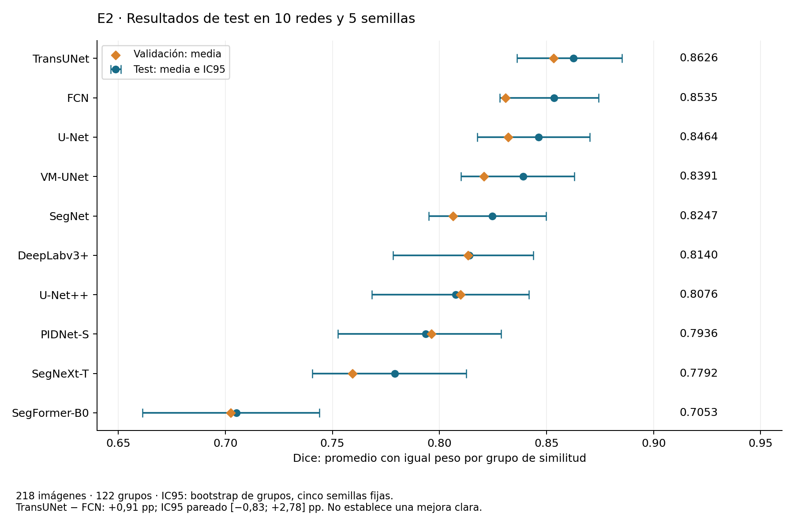
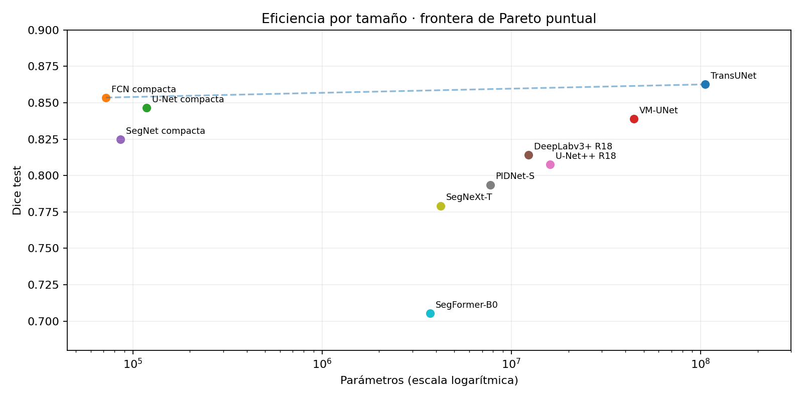
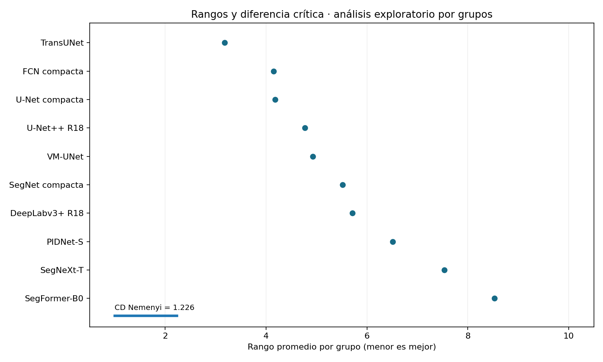
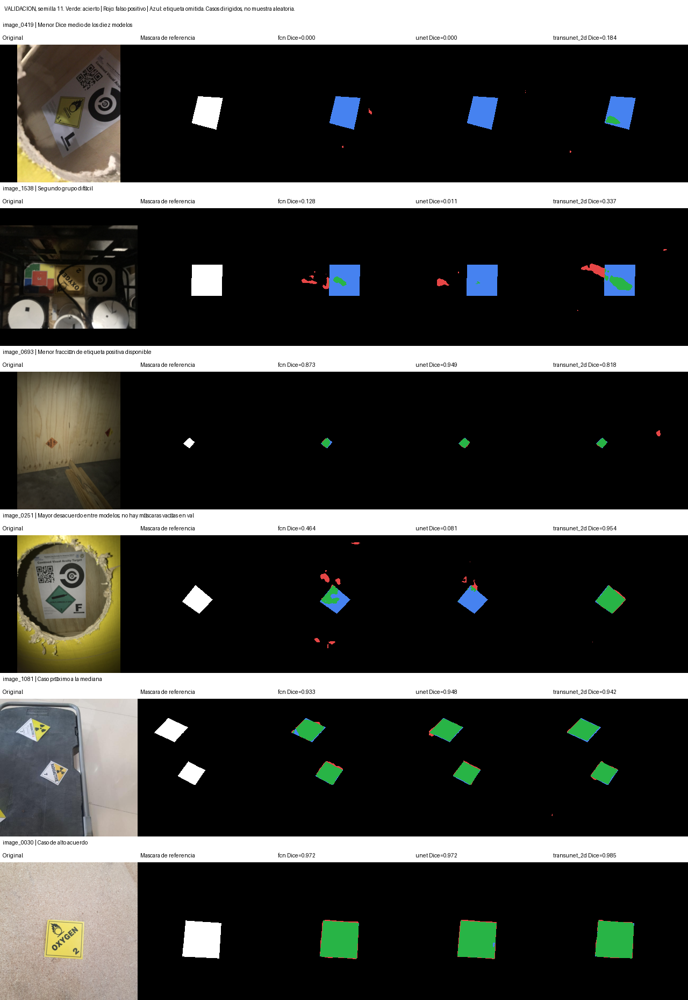

Resultados E2: benchmark e inferencia#
Se verificaron 50 corridas, 10900 registros por imagen y 2180 máscaras de semilla 11. Incidencias: 0. Test: 218 imágenes, 122 grupos; máscaras vacías: 0. Entrenamiento: NVIDIA L4; evaluación: Tesla T4. No comparar tiempos entre ambas GPUs como si fueran el mismo dispositivo.
Red |
Dice validación |
Dice test ± DE semillas |
IC95 test por grupos |
IoU test |
Parámetros |
|---|---|---|---|---|---|
transunet_2d |
0.8532 |
0.8626 ± 0.0057 |
[0.8363, 0.8852] |
0.7835 |
105,322,001 |
fcn |
0.8309 |
0.8535 ± 0.0136 |
[0.8282, 0.8744] |
0.7683 |
72,145 |
unet |
0.8320 |
0.8464 ± 0.0137 |
[0.8177, 0.8702] |
0.7616 |
118,273 |
vmunet |
0.8207 |
0.8391 ± 0.0297 |
[0.8101, 0.8630] |
0.7526 |
44,273,833 |
segnet |
0.8063 |
0.8247 ± 0.0334 |
[0.7949, 0.8499] |
0.7346 |
85,761 |
deeplabv3plus |
0.8133 |
0.8140 ± 0.0246 |
[0.7784, 0.8438] |
0.7282 |
12,329,297 |
unetplusplus |
0.8099 |
0.8076 ± 0.0059 |
[0.7685, 0.8417] |
0.7264 |
15,970,449 |
pidnet_s |
0.7963 |
0.7936 ± 0.0231 |
[0.7526, 0.8287] |
0.7078 |
7,716,291 |
segnext_t |
0.7594 |
0.7792 ± 0.0104 |
[0.7406, 0.8124] |
0.6813 |
4,225,121 |
segformer_b0 |
0.7025 |
0.7053 ± 0.0104 |
[0.6613, 0.7439] |
0.5946 |
3,714,401 |
Conclusión principal#
TransUNet conserva el mayor promedio de Dice en test, mientras FCN pasa al segundo lugar y U-Net al tercero. La diferencia principal TransUNet–FCN es 0.00906 (aproximadamente 0.91 puntos porcentuales). IC95 pareado por grupos: [-0.00828, 0.02779]. El intervalo incluye cero: esta evaluación no establece una mejora clara de TransUNet sobre FCN con este procedimiento. Tampoco demuestra equivalencia: el TOST con δ = 0,02 da IC90 [−0,0061; 0,0242] y p = 0,117 (bootstrap [−0,0056; 0,0244]), resultado indeterminado. U-Net y FCN sí resultan equivalentes (−0,0072, IC90 [−0,0148; 0,0005], p Holm(9) = 0,028), pero esa conclusión depende de las semillas: sin la 53 deja de serlo (p = 0,062). FCN compacta es una referencia favorable en coste/tamaño: 72.145 parámetros frente a 105.322.001 de TransUNet. FCN requiere menos parámetros, mientras que TransUNet presenta el mayor Dice medio de test. U-Net permanece competitiva. VM-UNet presenta mayor variación entre semillas. Los resultados bajos de SegFormer corresponden a esta adaptación desde cero y receta fija; no justifican inferioridad universal de los Transformers.
Límites de interpretación#
Los IC remuestrean grupos con cinco semillas fijas; la DE entre semillas se presenta aparte. Los grupos de similitud no equivalen necesariamente a escenas de captura independientes.
El contraste principal se fijó tras validación y antes de test. Los contrastes restantes son exploratorios y no tienen ajuste de multiplicidad.
Test tuvo exposición en E1. Se conservaron los checkpoints y umbral 0,5 fijados antes de esta evaluación; no describirlo como holdout nunca observado.
No atribuir diferencias sólo a arquitectura: capacidad, optimizador y auxiliares PIDNet también difieren; no hubo búsqueda exhaustiva de hiperparámetros.
Ausencia de imágenes negativas limita la evaluación de falsas alarmas en escenas sin etiquetas, en este test, que no tiene máscaras vacías.
Los tiempos registrados incluyen carga, transferencia y escritura de máscaras de semilla 11; no son una medición de latencia pura ni un benchmark de FPS.

Métricas secundarias completas#
Red |
IoU etiqueta |
mIoU |
Exactitud válida |
|---|---|---|---|
TransUNet |
0.7835 ± 0.0079 |
0.8868 ± 0.0041 |
0.9905 ± 0.0003 |
FCN compacta |
0.7683 ± 0.0157 |
0.8788 ± 0.0084 |
0.9899 ± 0.0010 |
U-Net compacta |
0.7616 ± 0.0151 |
0.8750 ± 0.0082 |
0.9889 ± 0.0014 |
VM-UNet |
0.7526 ± 0.0346 |
0.8705 ± 0.0182 |
0.9890 ± 0.0018 |
SegNet compacta |
0.7346 ± 0.0384 |
0.8603 ± 0.0211 |
0.9868 ± 0.0037 |
DeepLabv3+ R18 |
0.7282 ± 0.0262 |
0.8582 ± 0.0134 |
0.9888 ± 0.0009 |
U-Net++ R18 |
0.7264 ± 0.0076 |
0.8564 ± 0.0035 |
0.9870 ± 0.0011 |
PIDNet-S |
0.7078 ± 0.0264 |
0.8470 ± 0.0143 |
0.9868 ± 0.0023 |
SegNeXt-T |
0.6813 ± 0.0115 |
0.8328 ± 0.0063 |
0.9850 ± 0.0011 |
SegFormer-B0 |
0.5946 ± 0.0108 |
0.7883 ± 0.0056 |
0.9827 ± 0.0006 |
La dispersión es DE entre cinco semillas, no error estándar. Las métricas promedian grupos con igual peso.
Ampliación estadística exploratoria#
Exploratorio, especificado después de observar test. Unidad: 122 grupos; cinco semillas fijas. No hay 610 réplicas independientes. Se conserva el contraste cerrado previo. Esta ampliación no sustituye un preregistro anterior al entrenamiento.
Friedman por grupos: estadístico 321.48733; p = 7.1653448e-64. El contraste global detecta heterogeneidad del conjunto; no demuestra que TransUNet supere a FCN.
Modelo − FCN |
Diferencia |
IC95 |
d_z (IC95) |
p intercambio |
p intercambio Holm(9) |
p Wilcoxon Holm(9) |
|---|---|---|---|---|---|---|
TransUNet |
0.00906 |
[-0.00809, 0.02777] |
0.090 [-0.090, 0.255] |
0.33266 |
0.33266 |
0.204552 |
U-Net compacta |
-0.00718 |
[-0.01631, 0.00190] |
-0.141 [-0.309, 0.040] |
0.1257 |
0.2514 |
0.562787 |
VM-UNet |
-0.01449 |
[-0.03004, 0.00080] |
-0.167 [-0.340, 0.009] |
0.06578 |
0.19734 |
0.0934246 |
SegNet compacta |
-0.02886 |
[-0.03901, -0.01932] |
-0.517 [-0.659, -0.374] |
2e-05 |
0.00018 |
7.26313e-08 |
DeepLabv3+ R18 |
-0.03953 |
[-0.06000, -0.02036] |
-0.354 [-0.492, -0.207] |
6e-05 |
0.0003 |
8.26072e-06 |
U-Net++ R18 |
-0.04594 |
[-0.07204, -0.02088] |
-0.319 [-0.487, -0.147] |
0.00042 |
0.00168 |
0.0934246 |
PIDNet-S |
-0.05991 |
[-0.08622, -0.03486] |
-0.410 [-0.552, -0.261] |
2e-05 |
0.00018 |
7.86423e-07 |
SegNeXt-T |
-0.07435 |
[-0.09565, -0.05374] |
-0.626 [-0.765, -0.484] |
2e-05 |
0.00018 |
3.53343e-12 |
SegFormer-B0 |
-0.14827 |
[-0.18053, -0.11755] |
-0.828 [-0.980, -0.693] |
2e-05 |
0.00018 |
9.58156e-16 |
Supuestos y alcance#
Intercambio pareado: 49.999 cambios de signo Monte Carlo, p con corrección +1, bilateral sobre la media. Requiere intercambiabilidad del par bajo la nula; no es una prueba exacta exhaustiva ni una permutación de etiquetas con reentrenamiento.
Wilcoxon usa aproximación asintótica con corrección de empates y cero excluido; responde a localización/rangos bajo simetría, no exactamente a la misma hipótesis de media. Shapiro por diferencia se conserva en JSON; normalidad no acredita independencia.
Friedman/Nemenyi usan grupos como bloques, condicionales a modelos ya entrenados. La independencia de grupos es aproximada; la similitud no identifica escenas certificadas. No extrapolar a otros datasets.
Holm se aplica por separado a los nueve contrastes contra FCN para cada procedimiento. Los IC95 son marginales, no simultáneos. No elegir la prueba que dé el p más favorable.
d_z estandariza diferencias por grupo; no es d entre semillas. La probabilidad de superioridad por grupo y su dispersión se conservan en JSON.
δ heredado = 0,02 Dice. El IC del contraste principal incluye cero y se extiende fuera de ±δ; no acredita superioridad relevante ni equivalencia. El TOST pareado por grupos (t y bootstrap dan las mismas decisiones en los 18 contrastes) lo confirma: TransUNet–FCN p = 0,117; solo U-Net–FCN es equivalente. Detalle, simetría, max-T y sesgo del ganador en
resultados/inferencia_cierre_e2/LECTURA.md.
Referencia trivial y recursos#
Máscara siempre vacía: Dice=0.0000, IoU=0.0000, mIoU=0.4812, exactitud=0.9625. No sustituye un clásico fuerte ajustado. El contraste frente a cero no prueba ausencia de fuga ni reemplaza la permutación completa de etiquetas.
Modelo |
Parámetros |
Horas registradas (5 semillas) |
Rango por grupos |
Rango por semillas |
Pareto Dice/parámetros |
|---|---|---|---|---|---|
TransUNet |
105,322,001 |
3.461 |
3.180 |
2.00 |
Sí |
FCN compacta |
72,145 |
0.795 |
4.148 |
2.20 |
Sí |
U-Net compacta |
118,273 |
0.741 |
4.180 |
3.20 |
No |
VM-UNet |
44,273,833 |
2.905 |
4.926 |
4.20 |
No |
SegNet compacta |
85,761 |
0.534 |
5.516 |
5.00 |
No |
DeepLabv3+ R18 |
12,329,297 |
1.026 |
5.713 |
5.60 |
No |
U-Net++ R18 |
15,970,449 |
1.001 |
4.770 |
6.40 |
No |
PIDNet-S |
7,716,291 |
2.291 |
6.508 |
7.60 |
No |
SegNeXt-T |
4,225,121 |
2.043 |
7.533 |
8.80 |
No |
SegFormer-B0 |
3,714,401 |
1.599 |
8.525 |
10.00 |
No |
El tiempo suma épocas de entrenamiento y validación; excluye parte de E/S, interrupciones e instalación. No es tiempo puro de entrenamiento ni latencia. Pareto se refiere a estimaciones puntuales, sin afirmar dominancia estadística.
Potencia y sobreajuste#
El JSON guarda DE pareada entre semillas, MDD con R=5 y R aproximado para δ=0,02, α/9 y potencia 0,80. Es planificación futura normal basada en un piloto pequeño, no potencia prospectiva ni potencia observada certificada. Los historiales contienen pérdida de entrenamiento y Dice de validación: son escalas distintas. No restarlas para calcular una brecha ni afirmar ausencia de sobreajuste. El Dice de train en modo evaluación en el checkpoint elegido está en Diagnósticos sobre los pesos congelados (exploratorio); el margen δg fijado previamente no existe.
Discrepancia máxima al reconstruir la media principal desde los registros agrupados: 0. Esta es reproducción aritmética; no nueva inferencia en entorno limpio.
Segmentos y errores#
Cuartiles de fracción de área positiva definidos en train: [0.018086360733893254, 0.0317840576171875, 0.05170468634959915]. Resultados por estrato e IC remuestreando grupos dentro del estrato en analisis.json. Un grupo puede aparecer en varios estratos; no tratarlos como independientes. La correlación de 1−Dice coincide con la de Dice y describe dificultad compartida. No es una medida de acuerdo humano ni demuestra ruido irreducible. Los subgrupos son descriptivos, no contrastes confirmatorios.


En el gráfico de rangos, dos rangos medios separados por más de la CD son diferentes según Nemenyi al 5 %, bajo el supuesto de bloques independientes. No es el mismo criterio que el contraste de medias contra FCN.
Sensibilidad y potencia de planificación#
UNet++ ilustra la necesidad de no elegir pruebas por su resultado: intercambio de medias y Wilcoxon de rangos no producen la misma decisión tras Holm. La distribución de errores puede combinar muchos casos competitivos y algunas caídas grandes. Se conservan ambas respuestas y sus hipótesis.
Red frente a FCN |
DE de diferencia entre semillas |
MDD aproximada con 5 semillas |
R aproximado para δ=0,02 |
|---|---|---|---|
TransUNet |
0.0181 |
0.0293 |
11 |
U-Net compacta |
0.0136 |
0.0220 |
7 |
VM-UNet |
0.0299 |
0.0483 |
30 |
SegNet compacta |
0.0280 |
0.0453 |
26 |
DeepLabv3+ R18 |
0.0310 |
0.0501 |
32 |
U-Net++ R18 |
0.0183 |
0.0295 |
11 |
PIDNet-S |
0.0239 |
0.0387 |
19 |
SegNeXt-T |
0.0152 |
0.0246 |
8 |
SegFormer-B0 |
0.0182 |
0.0294 |
11 |
Son aproximaciones normales para planificar una evaluación futura, con α/9 y potencia objetivo 0,80. No justifican retrospectivamente el tamaño del experimento ni garantizan potencia de Wilcoxon.
Desempeño por tamaño anotado#
Cuartiles definidos por fracción de área en train: 0.0181, 0.0318, 0.0517. Las columnas muestran Dice y no representan pruebas entre subgrupos independientes.
Red |
Q1 menor área |
Q2 |
Q3 |
Q4 mayor área |
|---|---|---|---|---|
TransUNet |
0.8475 [0.7970, 0.8897] |
0.8580 [0.8122, 0.8961] |
0.8618 [0.8073, 0.9026] |
0.9163 [0.8831, 0.9427] |
FCN compacta |
0.8114 [0.7545, 0.8608] |
0.8541 [0.8126, 0.8898] |
0.8587 [0.8075, 0.9014] |
0.9044 [0.8649, 0.9361] |
U-Net compacta |
0.8114 [0.7506, 0.8622] |
0.8418 [0.7898, 0.8859] |
0.8395 [0.7765, 0.8928] |
0.8929 [0.8296, 0.9379] |
VM-UNet |
0.8210 [0.7798, 0.8589] |
0.8269 [0.7757, 0.8704] |
0.8360 [0.7687, 0.8906] |
0.8891 [0.8243, 0.9377] |
SegNet compacta |
0.7900 [0.7304, 0.8411] |
0.8178 [0.7687, 0.8635] |
0.8194 [0.7533, 0.8738] |
0.8874 [0.8309, 0.9329] |
DeepLabv3+ R18 |
0.7931 [0.7393, 0.8445] |
0.7991 [0.7341, 0.8543] |
0.8133 [0.7428, 0.8707] |
0.8764 [0.8164, 0.9270] |
U-Net++ R18 |
0.8189 [0.7638, 0.8655] |
0.8018 [0.7329, 0.8629] |
0.7731 [0.6813, 0.8548] |
0.8346 [0.7442, 0.9130] |
PIDNet-S |
0.7866 [0.7248, 0.8396] |
0.7971 [0.7289, 0.8560] |
0.7636 [0.6659, 0.8492] |
0.8339 [0.7364, 0.9111] |
SegNeXt-T |
0.7438 [0.6792, 0.8032] |
0.7756 [0.7141, 0.8329] |
0.7588 [0.6698, 0.8367] |
0.8614 [0.7835, 0.9215] |
SegFormer-B0 |
0.6947 [0.6204, 0.7599] |
0.7053 [0.6268, 0.7760] |
0.6584 [0.5637, 0.7458] |
0.7464 [0.6470, 0.8329] |
Revisión cualitativa anterior al test#

Se seleccionaron seis casos de validación por criterios explícitos: peor y segundo peor promedio, menor área, mayor desacuerdo, caso central y mejor promedio, en grupos diferentes. La visualización fija semilla 11; no representa una frecuencia de errores ni una explicación Grad-CAM. La evidencia detallada se conserva en resultados/revision_visual_e2/casos.json y OBSERVACIONES.md. Los ejemplos muestran dificultades con oclusión, iluminación y cobertura de anotación; no se editaron etiquetas tras observar predicciones.